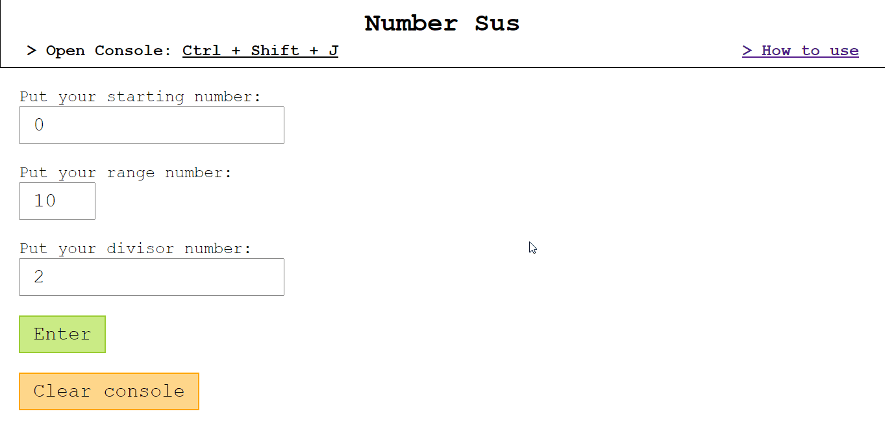
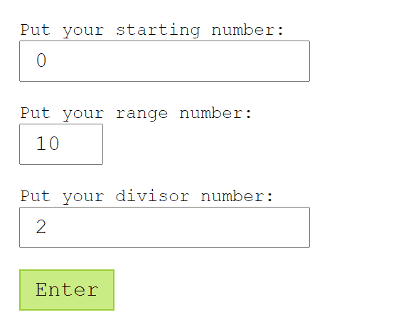
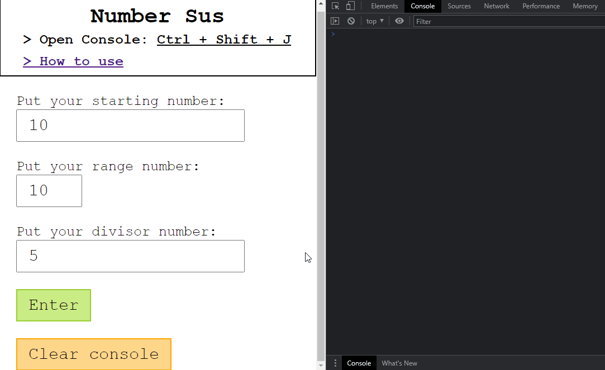
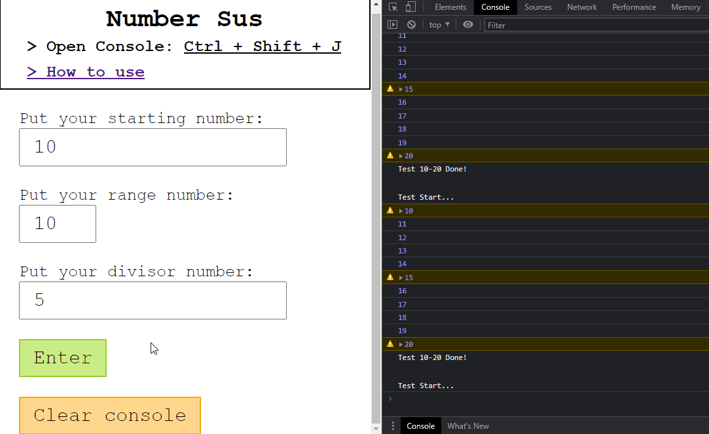

About
Number Sus is a simple site inspired by FizzBuzz by it's functionality and design. The purpose of this website is for the user to input values that will decide the number to start, the length and the number that will be used to check the printed input. The current method of checking the numbers is by checking if a certain number in the printed numbers is divisible by the checker value. Basically, this website let you see if a range of numbers is divisible by the number you've inputted in the page.
Reference
| Type | Details |
|---|---|
| Start Number | The number to start printing the results |
| Range Number | The length of the printed result from the start input |
| Divisor Number | The number that will check the printed results if divisible or not |
Step by Step
- Open the Browser Console using Ctrl + Shift + J 
- Put your desired inputs in the forms 
- To see the results, Click the Enter button or Type Enter in your keyboard 
- To clear the previous results, Click the Clear button 